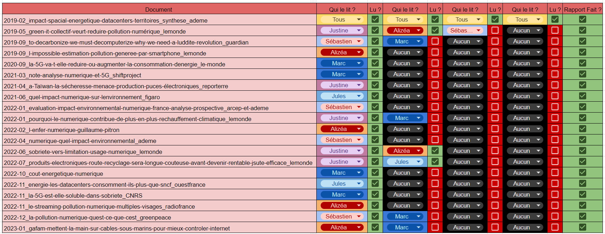
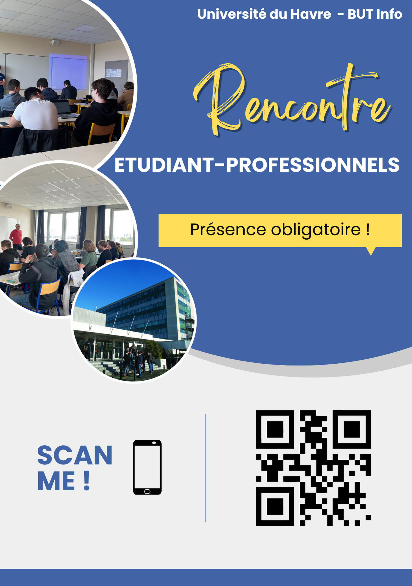
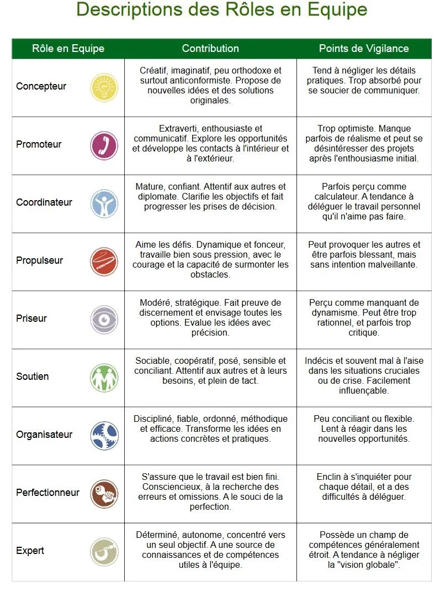

Preuves
SAÉ 1.06 Découverte de l'environnement économique et écologique
Projet scolaire en groupe, lecture et analyse de 22 documents sur l'impact numérique sur lécologie.
Voici notre tableau de partage de lecture.

Nous avons du produire un diaporama pour notre présentation oral, il reprend tous les point du pdf sur la deuxième question.
Ressource utilisé
- Les documents fournie dans ce projet
- Internet
- Les profeseur du But Informatique du Havre
- Google drive, doc, sheet
- Canvas
- Discord
Dificulté rencontré
- Le partage de document était laborieux car ils ne faisant pas tous la même taille,
- la bonne compréhenstion des documents
- la collecte des informations qui nous serrai pertinante pour répondre a notre thématique
- la vérification des données récolter
Ce projet correspond au 4 Composantes essentielles et
à l'Apprentissage critique Appréhender l’écosystème numérique.
SAÉ 2.06 Organisation d'un travail d'équipe
Projet scolaire en groupe, organisation d'un événement profitable a notre IUT.
Nous avons commencé par faire un contrat de groupe.
Nous avons utiliser comme base les rencontre professionnels étudiant que nous avons déjà fait, tout en améliorant le concept.
Nous avons raccourci le temps obligatoire de ces rencontres devenues 45 minutes et instaurer une "pause",
de 15 minutes, qui peut être utilisé soit pour poser plus de questions, soit de se préparer à la prochaine rencontre.
Cette structure permet aux étudiants non intéressés, de partir de la rencontre et de ne pas déranger ceux qui sont intéressés
qui eut peuvent donc rester et peuvent obtenir plus d'infos.
Ces pauses permettent aussi au intervenant de se reposer, pour souffler, pour su prendre une boisson, etc.
Comme exemple, nous sommes partis du principe que notre événement serait organisé un lundi et mardi.
Voici notre document de travail.
Nous avons travaillé sur des maquettes d'une application/site internet téléphone qui permettra aux étudiants de chaque
classe de savoir quel intervenant ils vont voir à quel jour, heure, dans quelle salle.
Cette appli est accessible via un QR code disponible sur un prospectus que nous distribuons quelques jours avant les rencontres.


Nous avons du produire un diaporama pour notre présentation oral.
Ressource utilisé
- Internet
- Les profeseur du But Informatique du Havre
- Google drive, doc, slide
- Canvas
- Slack
- Trellos
Dificulté rencontré
- Recommancer car notre première proposition n'était pas satisfessante
-
Nous pensions que nous devions tous organiser de A à Z, alors qu'on pouvez utilisé les servide de l'IUT,
comme la DIRLEM, service Communication pour nous aider, nous ne savions pas que ses servide existais.
Ce projet correspond au 4 Composantes essentielles et
au 4 Apprentissages critiques.
Nos cours de Projet Professionnel et Personnel
Nous avons eu trois jour de rencontre professionel étudiant qui nous a permit de découvrir unelistenon exaustive des différentes branche de l'informatique, comme
- cybersécurité
- développement de logiciel
- basse de donné
- réseaux téléphonique
- réseaux wifi
- etc ...
Cette preuve correspond à l'Apprentissage critique Découvrir les aptitudes requises selon les différents secteurs informatiques.
Nos cours de Communication Technique

Cette preuve correspond à l'Apprentissage critique Identifier les statuts, les fonctions et les rôles de chaque membre d’une équipe pluridisciplinaire.
Nos cours Gestion de projet et des organisations
Nous avons réaliser un dossier, en binôme, qui présente les différentes organisations vue en cours.